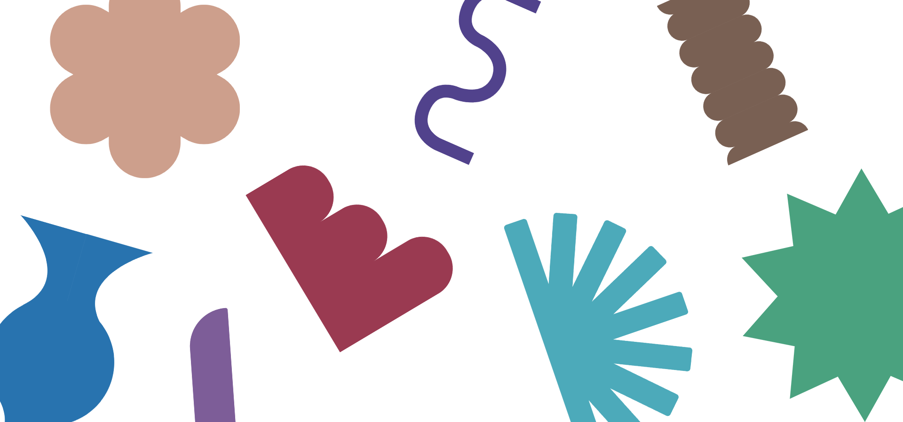
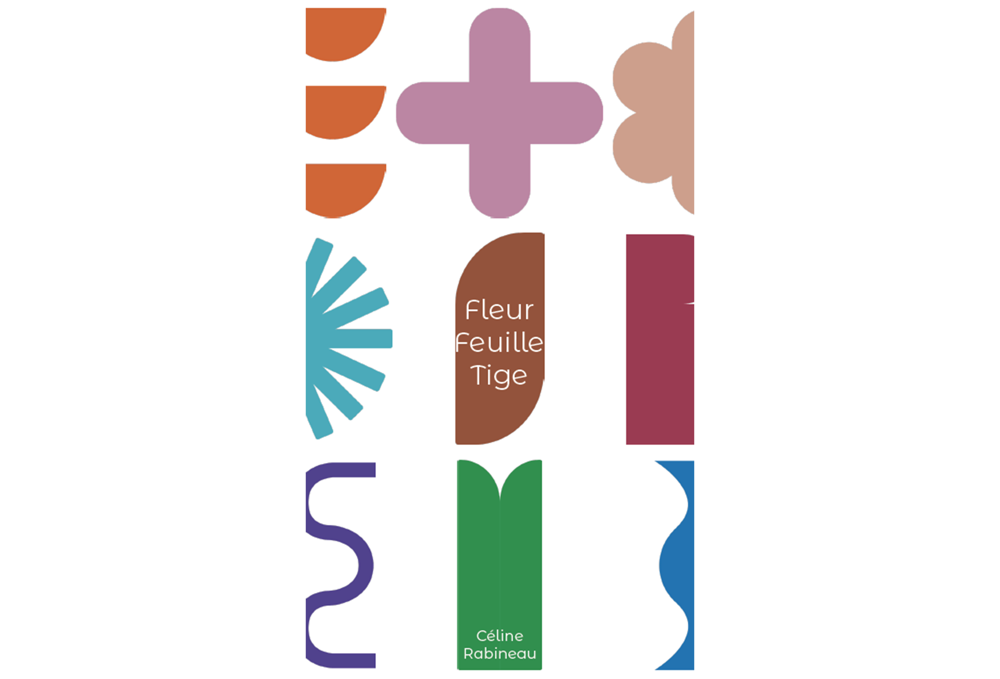
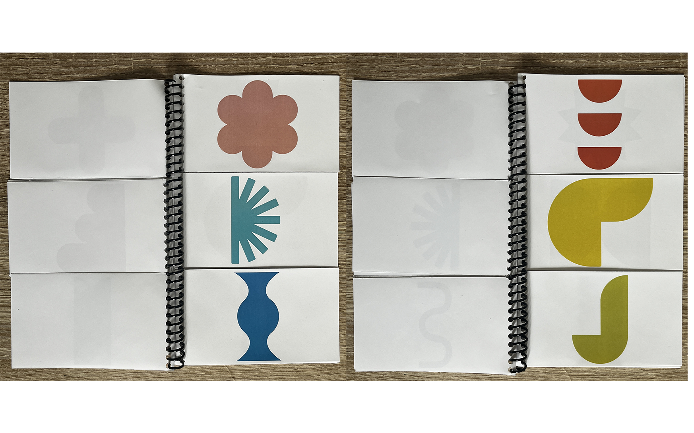
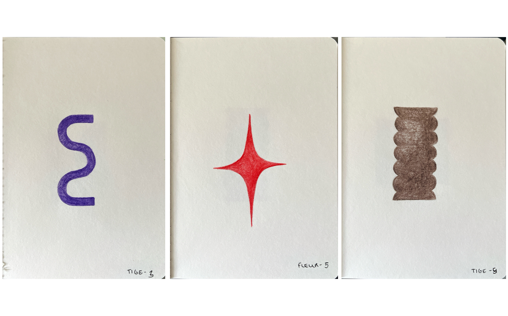

Illustrator, InDesign, Photoshop

Ce projet est né à partir de formes géométriques dessinées à la main, qui m’évoquaient
par leur structure différentes parties d’une plante simple : la fleur, la feuille et la tige.
Je les ai ensuite scannées et vectorisées dans Illustrator pour en faire une série de motifs graphiques.
L’édition est découpée en trois étages : en haut les fleurs, au centre les feuilles, en bas les tiges.
Elle propose de jouer avec le rythme des pages afin de composer sa propre plante en combinant les
éléments souhaités et propose une exploration graphique du végétal à travers.

